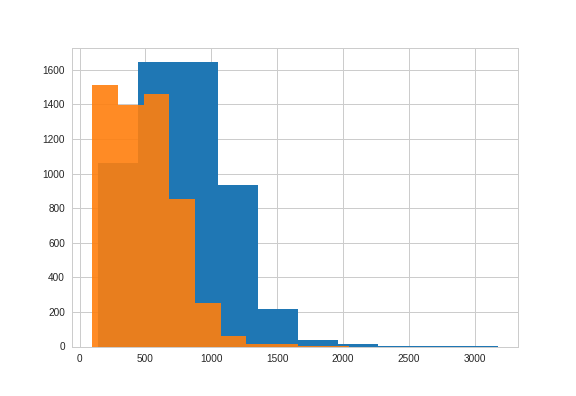

fpm
A estranha distribuição da população dos municípios pequenos e a importância dos histrogramas
- histograma dos menores de 50 mil, com trinta classes
- com cem classes
- com as faixas do FPM
- explicar o que é FPM
-
as explicações possíveis
-
próximo post: analisar o histórico da população (e a localização) das cidades nas faixas mais descontínuas
Está provado que acordar mais cedo faz o dia maior. Esta frase não é minha, e desgraçadamente não consegui saber o nome de seu autor, pois acordei muito cedo, mas não bastante cedo; quando liguei o rádio às 6:10 a aula já tinha começado; ouvi o programa até o fim, mas não fiquei sabendo o nome do professor. “La verando estas vera jardeno, plena de floroi.” Nunca estudei esperanto, mas suponho que a varanda ou o verão está com muitas flores no jardim; de qualquer modo é uma boa notícia, algo de construtivo.
Confesso que a certa altura mudei de estação; sou um espírito inquieto. A estação logo à direita dava telegramas de Argel, crise na França; fui mais adiante, sintonizei um bolero; tentei ainda outra, dizia anúncios; voltei para o meu jardim florido em esperanto. O professor estava agora respondendo cartas de ouvintes. O Sr. Sizenando Mendes Ferreira, de Iporá, Goiás, escrevera dizendo que achara suas aulas muito interessantes e queria se inscrever entre seus alunos.
Sou um homem do interior, tenho uma certa emoção do interior, às vezes penso que eu merecia ser goiano. A manhã estava escura e chuvosa em Ipanema; e me comoveu saber que naquele instante mesmo, a um mundo de remotas léguas, no interior de Goiás, havia um Sizenando, brasileiro como eu, aprendendo que o jardeno está plena de floroi — e talvez escrevendo isso em um caderno.
Não importa que neste momento haja milhões de brasileiros dormindo insensatamente, enquanto outros milhões tomam café ou banho de chuveiro ou já marchem para o trabalho, ou que minha amada Joana esteja neste minuto saindo do Sacha’s e entrando no carro daquele stompanato de Botafogo. Eu e Sizenando cultivamos o jardim da cultura, plena de floroi; nós somos, de certo modo, a elite do Brasil; amanhecemos em flor.
Então o professor, talvez estimulado pela atenção do ouvinte goiano, fez uma pequena dissertação sobre a utilidade do esperanto e também sobre a vantagem de acordar cedo. Está provado que acordar mais cedo faz o dia maior. Não será uma frase muito sutil, mas é tão pura e bem-intencionada que poderia figurar no decálogo do escoteiro. No fundo deve haver alguma ligação entre o escotismo, o esperanto e o acordar cedo. Eis uma falha de minha vida; nunca fui escoteiro; agora é tarde para quebrar coco na ladeira, mas talvez ainda seja tempo de aprender um pouco de esperanto; eu e Sizenando.

“Tenho um amigo” — dizia o professor — “que me confessou que nunca ouvira o meu programa, pois dorme até tarde. Pois bem. Ele ontem acordou cedo e ouviu o meu programa. Disse-me que passou o dia inteiro com uma excelente disposição, achou o dia maior e mais útil, ficou realmente satisfeito.”
O próprio professor estava satisfeito com a declaração de seu amigo; sentia-se isso em sua voz. Murmurei para mim mesmo que o golpe é este: todo dia acordar cedo, ouvir minha aula de esperanto e depois se houver alguma aula de ginástica pelas imediações topar também, mens sana in corpore sano; no fim de um mês os amigos vão ficar espantados, como o Braga está bem! Este pensamento me reconfortou; estendi a mão para pegar um cigarro na mesinha de cabeceira, mas fumei com um certo remorso. No fundo o esperanto deve ser contra o tabagismo, assim como é favorável ao escotismo.
“Mi estas brunas.” Isto quer dizer: eu sou moreno. Mi estas brunas, ó filhas de Jerusalém, dizia a Sulamita. A esta hora Joana deve estar no carro daquele palhaço, toda aconchegada a ele, meio tonta de uísque, vai para o apartamento dele — um imbecil que não sabe uma só palavra de esperanto! A vida é triste, Sizenando.